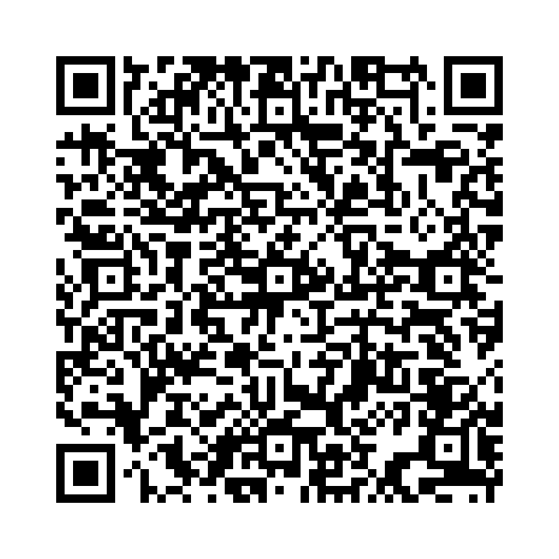

助動詞表現 used to は、「以前は～した（が、今は違う）」という過去の習慣や状態を表します。
例文：
以下の単語を並び替えて正しい文を作成しましょう。（和訳を参考にしてください）

問題1: (used / I / play / to / soccer) - 私は以前サッカーをしていました。
解答: I used to play soccer。
解説: 肯定文では「主語 + used to + 動詞の原形」を使います。
問題2: (Did / use / live / to / you / here / ?) - あなたは以前ここに住んでいましたか？
解答: Did you use to live here?
解説: 疑問文では「Did + 主語 + use to + 動詞の原形」を使います。
問題3: (didn’t / use / she / to / drink / coffee) - 彼女は以前コーヒーを飲みませんでした。
解答: She didn’t use to drink coffee。
解説: 否定文では「主語 + didn’t + use to + 動詞の原形」を使います。
問題4: (used / to / read / they / books) - 彼らは以前本を読んでいました。
解答: They used to read books。
解説: 肯定文の形式を使います。
問題5: (use / to / did / they / travel / abroad/ ?) - 彼らは以前海外旅行をしていましたか？
解答: Did they use to travel abroad?
解説: 疑問文で「Did + 主語 + use to + 動詞の原形」を使います。